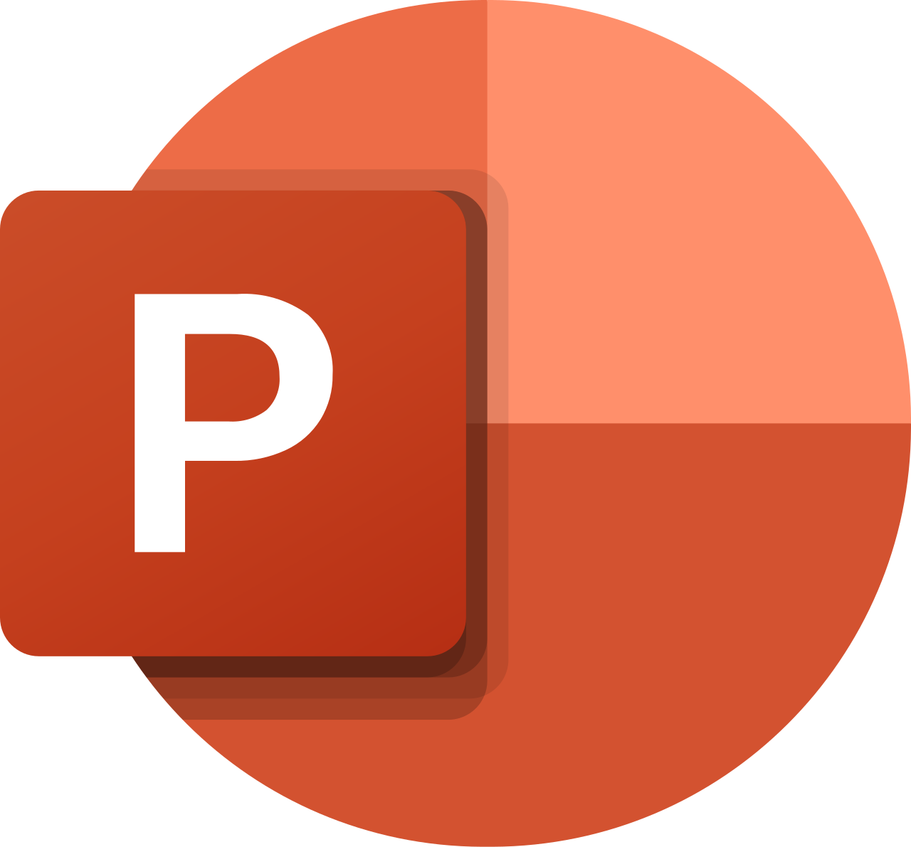

보유 역량
-
스프레드시트 활용 및 자동화
 Excel
참조함수·계산식·조건부수식·데이터유효성검사·VBA
Excel
참조함수·계산식·조건부수식·데이터유효성검사·VBA
 Google Sheets
참조함수·계산식·조건부수식·드롭다운
Google Sheets
참조함수·계산식·조건부수식·드롭다운
- 함수 및 수식(Lookup, Find, 배열수식 등)을 활용한 데이터베이스 관리 및 자동화
- 데이터 유효성 검사와 조건부 수식을 통한 입출력, 검색 최적화
- VBA와 매크로 기능을 사용한 데이터 테이블 시트 자동화 설계
-
기획 설계 및 문서화

PowerPoint 개체정렬·간격조정·그룹화·도식화 Word
표작성·목차자동화·각주관리
Word
표작성·목차자동화·각주관리
 Figma
오토레이아웃·프로토타이핑·실시간협업
Figma
오토레이아웃·프로토타이핑·실시간협업
- 개체 정렬과 간격 맞추기, 그룹화 등 편집 기능을 활용한 정밀한 레이아웃 구성
- 데이터 도식화를 통한 정보 전달의 시각화 및 소통 활성화
- Figma와 PPTX를 활용하여 UI 구성 및 UI 플로우 설계
-
AI 활용
 ChatGPT
프롬프트엔지니어링·이미지생성·코드어시스턴트
ChatGPT
프롬프트엔지니어링·이미지생성·코드어시스턴트
 Claude
바이브코딩·정적웹구현·리팩터링·디버깅
Claude
바이브코딩·정적웹구현·리팩터링·디버깅
 ComfyUI
워크플로우설계·인페인팅활용
ComfyUI
워크플로우설계·인페인팅활용
 Suno AI
배경음·효과음생성
Suno AI
배경음·효과음생성
- ChatGPT·ComfyUI를 활용해 기획 의도에 맞는 레퍼런스 이미지 생성
- ChatGPT·Claude 기반 바이브 코딩으로 아이디어를 웹 프로토타입으로 빠르게 검증
- 필요시 ChatGPT·Suno AI 등을 활용해 리소스 생산
-
Unity 엔진
 Unity
Scene구성·Prefab활용·Component조합
Unity
Scene구성·Prefab활용·Component조합
- 씬, 게임오브젝트, 컴포넌트 등 Unity 기본 구조 이해
- 객체, 프리팹 생성 및 복제를 활용한 게임 오브젝트 및 UI 구성
- 스크립트의 구조를 읽고 분석하여 기획 의도와 실제 구현 로직 비교 및 검증